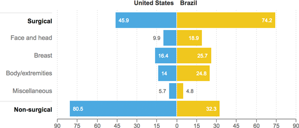

Plastic Surgery Procedures In 2013, Per 10,000 People
According to an industry survey of plastic surgeons, Brazilian patients lean more heavily toward surgical procedures, while American patients favor nonsurgical ones.

Notes
“Miscellaneous” includes procedures like fat grafting. “Nonsurgical” includes procedures like Botox, fillers and peels.